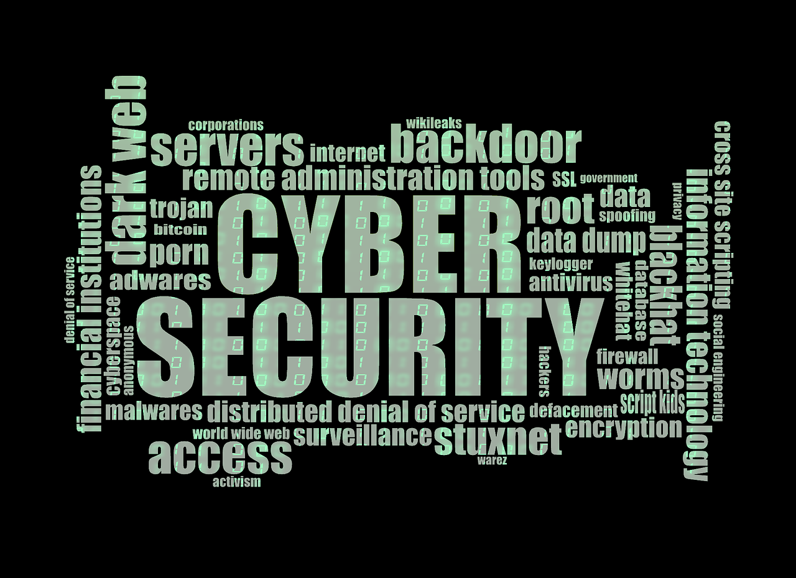

DICAS DE SEGURANÇA NA INTERNET
- Não divulgue e nem compartilhe - a senha é sua e de mais ninguém.
- Não escreva em local público ou de fácil acesso.
- Nunca use palavras de dicionários ou dados pessoais como senha.
- Crie senhas com mais de oito caracteres e que misture letras maiúsculas, minúsculas, números e caracteres especiais.
- Mude de senha regularmente, principalmente se utilizar máquinas compartilhadas e/ou administradas por pessoas.
- Verifique a procedência de emails com anexos duvidosos (de bancos, lojas ou provedores de serviços) observando o cabeçalho completo da mensagem.
- Mesmo que tenha antivírus atualizado, evite abrir arquivos enviados por fontes não confiáveis. Verifique se o remente é mesmo quem ele diz.
- Desconfie muito de arquivos executáveis recebidos (.exe, .bat, .zip), mesmo vindo de fontes confiáveis.
- Verifique a veracidade das informações e use sempre seu bom senso antes de repassar.
- Jamais preencha formulários com seus dados enviados por supostos bancos.Na dúvida entre em contato com seu gerente. Ver mais
- Tenha sempre um email de filtro para efetuar cadastros na internet.Evite colocar o email que usa frequentemente para trabalho ou amigos.
- Evite fazer cadastros pela Internet, especialmente fornecendo seus dados pessoais, a não ser que seja estritamente necessário.
- Procure não fornecer seus dados pessoais (como nome, e-mail, endereço e números de documentos) para terceiros. Também nunca forneça informações sensíveis (como senhas e números de cartão de crédito), a menos que esteja sendo realizada uma transação (comercial ou financeira) e se tenha certeza da idoneidade da instituição que mantém o site.
- Cuidado aos disponibilizar informações muito pessoais em sites de relacionamento (telefones móveis, endereços residenciais, etc).
- Faça regularmente cópias de reserva (backup) de todos os seus dados importantes. Pense nas coisas que realmente lhe fariam falta caso perdesse tudo e cuide para que isso não aconteça.
- Discos rígidos, pendrives, CDs e DVDs também dão defeito! Tenha sempre mais de uma cópia e não confie em apenas um tipo de mídia de armazenamento.
- Tenha pelo menos um filtro de linha entre seu computador e a rede elétrica.um nobreak seria melhor
- Mantenha seu computador e cabos protegidos contra quedas e esbarrões.
- Mantenha seu computador e suas mídias (como pendrives, CDs e DVDs) em local seco, com temperatura amena e sempre protegidos de fontes eletromagnéticas fortes, tais como celulares, caixas de som e outros.
Dica 1 - Escolhendo suas senhas
Dica 2 - Recebendo emails
Dica 3 -Protegendo seus dados pessoais
Dica 4 - Backup de seus dados
Dica 5 - Protegendo o perímetro
Fonte: http://www.tecnohall.com.br
Ver menos